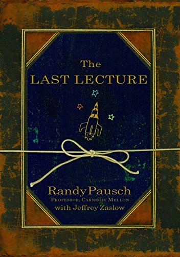

The Last Lecture

Brick walls are there for a reason: they let us prove how badly we want things. The brick walls are there to stop people who don’t want it badly enough. They are there to stop the other people.
These words stuck with me after I came across them years ago. They recently popped up again when I nearly gave up a challenging task. I came back and watched the YouTuBe video again. His optimism still moved me.
Randy Pausch was a computer science professor at Carnegie Mellon University. The university has a tradition of inviting professors to give a lecture where they pretend that it is their last chance ever to talk to their students. For Randy, it’s the last lecture. He had been diagnosed with terminal cancer and only had a couple of months left.
I love the book, but I would strongly recommend you to watch the video. This is the youtube link: https://www.youtube.com/watch?v=ji5_MqicxSo&t=225s&ab_channel=CarnegieMellonUniversity Randy Pausch Last Lecture: Achieving Your Childhood Dreams
I love the book, but I strongly recommend the video. You can learn much more about Randy’s personality by watching the lecture. There is so much information that simply words can’t express.
He talked about his childhood dreams and how he achieved them and enabled the childhood dreams of others. His student Tommy achieved his dream of working on the next Star War film. And yes, Tommy did work on all the following three films. He created a course called Building Virtual Worlds at Carnegie Mellon University, which allows you to build whatever you want in VR in 2 weeks and showed them to the class. And the BVW course has become a yearly event since then. And the Dream Fulfillment Factory and the tool Alice helps kids have fun while learning something hard.
I also listen to the audio book. Lucky that I didn’t finish the last chapter during my workout. Otherwise, it would be embarrassing. I almost cry.
I had read books about cancer, about saying the last goodbye. This one is the most optimistic. There are books that stick with me forever and shape my life. This is one of them.